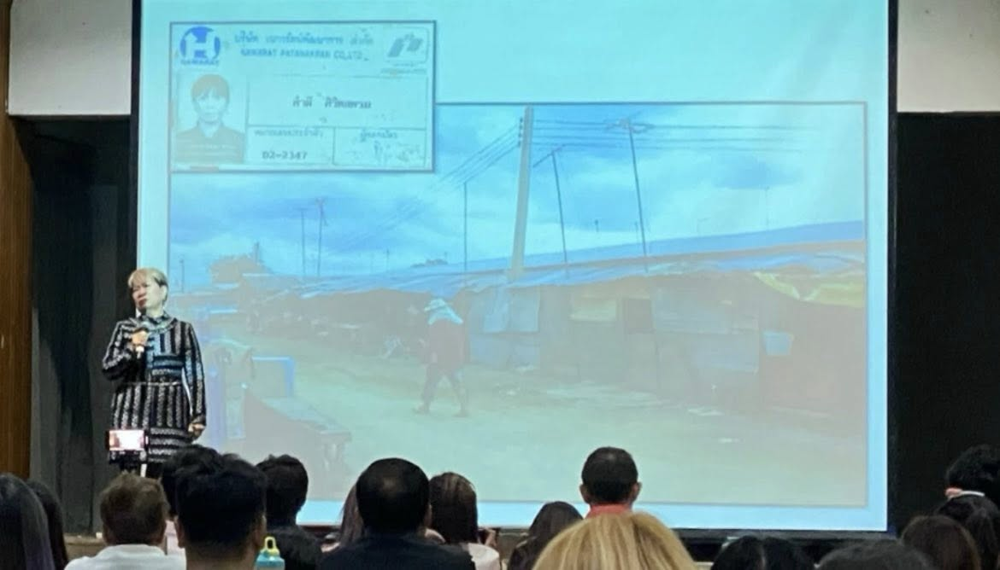

Một người siêu nghèo đổi đời nhờ Amway?
Cô Tém từng là người lao động nghèo ở Thái Lan, làm đủ việc từ phụ hồ đến công nhân tưới cây. Thu nhập chỉ 2.000 baht, lúc nào cũng nợ trước thiếu sau. Nghèo đến mức sinh con không nuôi nổi phải đem cho, ba mẹ mất phải gỡ vách nhà ra đóng làm hòm vì không có tiền mua.
Dù vậy, cô luôn ước mơ có cuộc sống sang trọng hơn. Khi người em ruột giới thiệu Amway và nói rằng: “Ước mơ của chị ở trong đây, nhà xe chị cần ở trong đây, làm đi rồi lấy chúng”, cô bắt đầu suy nghĩ nghiêm túc về cơ hội này.
- “Cuộc đời phải biết suy nghĩ.”
- “Nghèo mà chết rất đáng sợ, nhìn không có sang trọng.”
- “Tôi đi center - hội nghị của những người làm Amway, thấy ai cũng lịch sự và có hy vọng.”
- Không có tiền trải nghiệm sản phẩm, cô xin tuyến trên chia cho nửa tuýp kem đánh răng để trải nghiệm và mang đi minh họa cho khách.
Sau 1 năm 9 tháng, cô đạt danh hiệu Platinum, thu nhập 30.000 baht (gấp 15 lần thu nhập công nhân), rồi tăng lên 80.000, hơn 100.000 baht… Lần đầu thấy tiền nhiều quá, cô xách tiền lên công ty hỏi có chính xác là thu nhập của mình không để biết đường mà dùng.
Tiền về đều đặn, cô nhét vào giày, dắt quanh người, bỏ trong ba lô mà vẫn quá nhiều. Cô mua 5 chiếc xe máy, rồi 3 chiếc ô tô dù chưa biết lái, chỉ để “mua cho mau hết tiền”. Sau đó cô mới mua nhà để có chỗ để xe.
Nguồn hình: Ảnh minh họa từ buổi chia sẻ của Cô Tém.
Amway - cơ hội kinh doanh dành cho người có ước mơ và chăm chỉ.